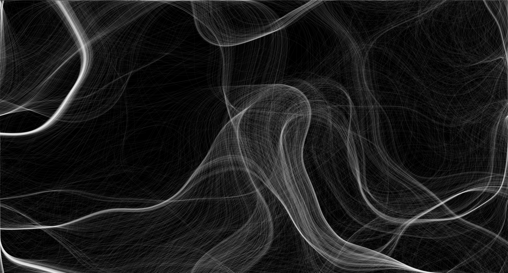
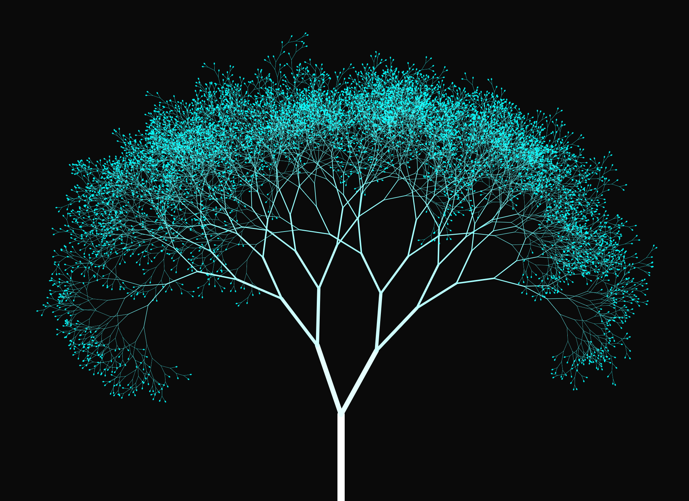

Changing noise field.
 Algorithm to convert an image to colored bubbles.
Algorithm to convert an image to colored bubbles.

Fractal Tree
 Static noise field
Static noise field
A topic I sometimes dabble in is Generative Art or Code Art. Without having any real artstic skills, I instead try to use mathematical functions and programming to create interesting visuals and animations.
The site background, (which is static on mobile for perforamce reasons), is made of particles traveling in a noise field. The feild can be seen as a terrains with peaks and valleys in which the particels to "flow" in the least steep direction, causing this effect.
Algorithm to convert an image to colored bubbles.
Static noise field